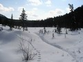
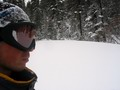
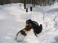
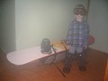

don`t worry, Be Happy !

|
|
don`t worry, Be Happy !
|
|
|
9-10 апреля 2005. Слюдянка - Метеостанция "Хамар-Дабан"
Накануне доделал снегоступы из фанеры 8мм 50х25см. Крепления думал-думал и прикрутил лыжные. Придется в лыжных ботинках идти. Еще крепления переставлял на борде, сделал встречно, а задники открутил. К рюкзаку борд привязал скользяком наружу, буду катить рюкзак на доске. Собрал в куль: Ботинки сноубордические сверху, борд сзади, палки и снегоступы будут в руках. Звонил Сергею Какаурову - он в Иркутске был, поздно приехал, если успеет собраться, то пойдет. Договорился с шофером дежурной машины, завезет за Слюдянку. Спать в 0:30, подъем в 4:00, маловато ! 4:00 Не завтракал, подсобрался, вызвонил машину с работы дежурную, выехали. Сергей пожелал удачи и аккуратно кататься. 5:00 - вышел по расписанию. Несу снегоступы - впереди тропина маленькая, но есть. Примерно 4 чела и собака проходили. Темно. Фонарик на 3 белых включил, один зеленый плохо светит, а 6 белых не много ярче 3х. Небо звездное, снежинки на ветках проблескивают. Тепло. Первый ночной зимний заход. По дороге пробую снегоступы - непривычно. Связал их и понес пока в руках. 6:30 - на 3 броде остановка. Рассветает, фонарик убрал. Отправил СМСки Сергею Домышеву и Валентину, пусть знают, что я вышел и позавидуют :) Тропа такая же, снегоступы привязал наверх куля. Пошел с палками первый раз, вроде удобно. 8:20 - дошел до домиков. Возле тропины лыжи с камусами, собачка лает, сторож наверное спит. Тропина привела к бане ! Проскочил незаметный отворот с занесенным следом одного человека - это и есть тропа на метео ! Круто я попал ! Но идти можно, хотя уже и труднее. Иду в лыжных ботах, немного проскальзывают. Штаны начинают намокать от снега, бахилы-то никто мне не сшил ! После 12 мостика на подъеме одеваю снегоступы, хватит
их тащить. Иду, мучаюсь, привыкаю. Носок не загнутый, цепляет за снег,
приходится подымать ногу выше. Широкие, цепляются между собой, приходится
шире шагать. Рюкзак едет на борде, тяну его рукой (а куда поводок привязывать?
об этом я не подумал!), в другой руке палки. След широкий получается,
как от снегохода :) Идти вроде легче, но Примерно в 10:30 догоняет Денис Куренков. Решил все-таки сходить перед поездкой на Мунку-Сардык. Сказал, что по моему снегоступному следу идти хуже. Идет на легке, куль полупустой. Пошел вперед тропить, ушел быстро. Снимаю нафиг снегоступы и зарываю возле стесанного кедра. 11:10 - из-за горы засветило солнце яркое. Так в лыжных
ботасах и иду. Снег на штанах стал таять быстрее, мокро. Водяное охлаждение
ног :) Тепло, снег начал подтаивать. Хочется кушать и пить. Решаю идти
до Горелой Поляны, последний мостик пройден, вроде недалеко осталось.
Но так тяжело идти ! Куль несу – катить на доске по глубокой колее тропины
трудно - цепляется боками. Страшно хочется пить и есть. Снег хоть и
вкусный, но не питательный. Солнце яркое, ноги мокрые. 12:50 - на последнем издыханье дотащился на поляну. Почти
7 часов пути без завтрака и отдыха - офигенный марафон, я так еще не
ходил зимой ! Да и летом так ходить больше не буду. Камень столик возле
тропы, раскладываюсь, включаю горелку, топлю снег в котелке. Ветер задувает
и сносит тепло от котелка. Котелок явно не для горелки - узкий и высокий,
без крышки, очень долго закипает. Снимаю мокрые черные штаны и носки,
одеваю тонкие сухие носки, штормовые штаны и сноу-ботинки, так теплее.
Сделал бутер с сыром, слопал со снегом. Заварил пюре - есть охота, а
не могу от усталости :) Поел, жду чай, закипает долго, бросил заварку,
плавает сверху вместо крышки, так быстрее закипит. Закипел. Отпиваюсь
чаем со сгухой. 14:30 - пошел через Горелую на подъем. Немного пройдя согрелся, снял куртку и шапку. Иду в свитере и маске, тепло, солнце прямо светит. В бордических ботинках идти нормально, стопа зафиксирована, протектор надежных. Снег липкий, Денис прошел, следы крепкие, иду нога в ногу, не проваливаюсь. На подъеме всего раз отдыхал, после обеда и отдыха на Горелой настроение поднялось, идти легко, если можно так выразиться о подъеме с тяжелым рюкзаком :) Палки лыжные помогают - лучше держать равновесие на "слабеющих" ногах, да и отталкиваясь ими от снега добавляется ускорение небольшое. 16:10 - "легко" дошел до Казачьей поляны. Огромные следы какого-то зверя. Достал фотик, заснял поляну. Осталось вроде немного - пройти поляну и подъем до метео. Ох и долгая же дорога позади осталась ! Поднимаясь к метео заприметил хороший учебный спуск - справа от тропы, почти вдоль всего подъема. 16:50 - долгожданная примета - туалет на метео :) А вот
и сама метеостанция. Снега столько, что забора не видно, одни столбики
торчат. Идолу по горло. На крылечко вышел синоптик в тельняшке, приветствует
- "Здорово, дядька !". "Здорово!". Куда идешь?",
"Да вроде к вам хотел. (куда больше-то, тропа кончилась!)",
"Ну заходи, ночлег - 50 р с носа. Чай будешь? наливай, горячий." Денег взять я забыл, обещаю отдать через Дениса, он на
метео часто бывает. Снимаю куль, отряхиваюсь от снега, доску на веранде
оставил, куль в избу. Денис гоняет чай, сидит довольный, на два часа
раньше зашел, но тоже запарился. 18:45 - пошел кататься по примеченному спуску. Сверху
видно Слюдянку, т.е. это я так думал сначала. На самом деле это противоположные
ангасольские горы. Катания не получилось. Или склон сильно пологий,
или снег липкий, с боков держит доску, или все сразу. Бегу в дом за
отверткой, переставляю крепы еще назад. Один черт, не всплывает нос
доски из-под подмерзшего наста. Кое как пробиваюсь до Пошел ужинать. Сергей распить четверть Путинки отказался, соблюдает пост. Да и мне не особо хотелось выпивать. Заначили до Пасхи, 1 мая будет, тогда можно. Не знаю, я вроде на Тальцинский собираюсь, но кто знает... Синоптик Сергей каждые 3 часа включает радиостанцию. Идет опрос, кто-то в эфир диктует ряды цифр. Потом очередь Сергея: "30815, 30815" это код метеостанции, ну и т.д., параметры приборов шпарит. Живут на метео кошка и кот. Спят на печи, на шкафу, на столе. Зажрались, Сергей говорит, и колбасу не всегда едят. 21:00 примерно. Темнеет. Пришел нежданный гость - длинноволосый
парень из Иркутска, без лыж, вышел с вокзала в 12:30. Говорит, обогнал
двух теток на туристских деревянных лыжах, которые мучались от подлипа,
и еще двух на пластиках, которых отдача замучила. Так, народу дома не
сидится :) Сергей раздувает печку, ставит воды греть побольше - надо
народ чаем поить. Парень устраивается, ужинает. Разговоры ведутся на
разные темы. Тепло и хорошо. Синоптик Сергей человек дружелюбный, да
и как тут иначе жить-то. Метеостанция - остров цивилизации. Все дороги
сюда идут. Летом палатку на соседней поляне 22:30 примерно. Делать нечего, да и сил нет. Ложусь спать
на коврике, на полу. Одеваю жилет, укрываюсь курткой. Сергей дает покрывало.
Только начал засыпать, пришли две тетки пожилые, которые на пластиках.
Удивлялись последнему подъему перед метео - как это мы вчетвером так
плохо протропили. Оказывается они поднимались по целине, по следу от
моего борда :) он как раз прямо на тропу выходит. А натоптанная тропа
в сторону сворачивала, они по темноте в лес не Ночью в 12, в 3 и в 6 часов звенит матерый будильник.
Сергей снимает показания приборов и кричит в эфир громко и повторяя,
потому как ночью радиосвязь хуже, и дядька в Иркутске его плохо слышит.
Под утро передают метель, у кого-то чуть крышу не сорвало с домика. День 2............................................... Охота поваляться и еще поспать. Но на полу, хоть и на
коврике, но жестковато и непривычно. Тетки неспокойные, завтракают уже,
ходят и разговаривают. Спрашивают, пойдем ли мы с парнем на Черского.
Говорю, что пойдем наверное. Парень спал рядом, вроде соглашается. 8:00. Подъем, все равно спать не спится. Увидел за окном метель. Вышел из дома, умылся свежим снегом. Выпало прилично - вчерашняя тропа еле видна ! Перемело. Елки, одетые в снег. Гор не видно. Кстати, снега по самые окна и выше... Зима в апреле. Подъем на Черского отменяется явно. Завтракаю. Тетки кормят
кошек огурцами. Забавное такое общежитие, почти все чужие, и в то же
время - как старые знакомые. Разговоры опять на разные темы, поддерживает
кто хочет, каждому есть, что Собираюсь покататься, одеваюсь как в космос :) Все герметично для снега - ботинки, шторм-штаны, куртка с анти-снежной юбкой, перчатки туго затянуты, маска поверх шапки. 9:45. Троплю слегка до горки. Снег легкий и пушистый,
одним словом - пухляк. Сейчас отведаю целины! Отведал :) целина коварная,
по ней еще надо уметь ехать ! Разогнался и упал на первом повороте,
зарылся в снег, герметичность рукавов и воротника никакая - освежился
снежком :) 12:45. Выглянуло солнце, снег идти перестал. Стартанул
по тропе вниз до Казачьей. С рюкзаком и палками непривычно. Упадешь
на спину - рюкзак мешает выбраться, но зато палками можно упираться
- удобнее вставать. Да и палками можно тормозить на крутом склоне, что
лучше, чем врезаться в ель на повороте. По Казачьей поляне лыжебординг
не получился - палками конечно можно отталкиваться и ехать на борде,
но очень тяжело! Запечатлел на фото елки в снегу и свой профиль в маске.
Потопал через поляну пешком, борд на веревочке катится сзади. 13:45. Вышел на место вчерашнего обеда, откопал лыжные боты. Черт дернул переставить крепления на борде поострее, думал так удобнее будет отталкиваться палками и ехать вперед по ровным участкам. Оказалось, что не очень-то и удобно, да и ехать непривычно, а потому плохо. По дороге встретился сменщик Сергея - Андрей. Шел пешком, тянул на веревке горные лыжи с туристическими полужесткими крепами. Поговорили немного. Блин, как же неудобно спускаться на борде после Горелой - спуски пологие, ровные участки, подъемчики. Трое лыжников обогнали влет - у них колея уже, не цепляют, на подъемах елочкой. Да и рюкзачки с моим кулем не сравнить. Я еще на каждом приличном спуске встегивался, немного скатывался, опять выстегивался, тянул доску на веревке. Муторно и долго. 15:35. Дошел до места захоронки снегоступов. Долго варил чай в солдатском котелке на газу. Опять переставил крепы по старому. Подкрепился чаем с пряниками. Снегоступы в рюкзак положил, еще пригодятся на Тальцинский идти, доработать только надо. 16:40. пошел дальше. Впереди должны быть еще небольшие
спуски до домиков, и где-то после 6 брода. Ерунда, а не спуски. Пологие,
на лыжах помню по ним разгонялись лихо, а на борде - ерунда. 19:30. 3 брод. Включил сотик - получил СМСки от Лены (когда придешь?) и из офиса (есть клиент на интернет). Отдохнул, привязал досочку тяжелую к рюкзаку повыше, как нормальные бордеры. 19:50. Осталось немного до дома. Нормальные бордеры не дураки однако ! Тащить доску легче на куле, чем за собой. По ногам не долбит и не дергает назад. Тропа подмерзшая, снега мало, народу прошло много. Вообще обратно тропа лучше утоптана - больше народу поработало, не то что на подъем. Первопроходцы, блин. Ну да ладно, главное сейчас открылось второе дыхание... Разогнался до дома... 20:55. Вышел на место вчерашнего старта. Итого, туда я шел 12 часов, обратно - 8. Ой, как долго! Не верится даже, что Валентин сходил туда за 6, обратно за 3. Лыжня и лыжи - великая сила :). Впереди город Слюдянка, самые тяжелые километры. Никого не стал вызванивать и заказывать "такси". Сам ходил кататься, сам и возвращайся ! Темнеет уже. Прошел по дороге немного, свернул на дамбу, от Пентагона по Парижке пошел. 21:50. Вот я и дома ! Как же приятно возвращаться ! Не менее, чем уходить ... и это есть хорошо! Ноги после 9-ти часовой ходьбы в сноубордических ботинках отказываются по человечески ходить босиком. Икры сразу заныли. НО активность не исчезает, вон как дунул от 3-го брода! На остатках активности разобрал рюкзак, очистил доску, повешал вещи сушиться. Андрюшка обалдел от огромного рюкзака, доски и всего остального.
Одел маску и внутренники от ботинок. Сфотал его возле рюкзака с доской.
Будущий бордер ! Выводы: ................................................. Как всегда - мало времени. С своими причудами (снегоступами,
доской в роли санок) очень долго заходил, и обратно тоже (крепы туда-сюда
переставлял, кататься по дороге пытался). Попробую сходить в мае-июне, снег еще должен быть. Нужны короткие туристические лыжи - заходить, а особенно спускаться, лучше на них. Спуски от метеостанции до полян еще можно на борде быстро ехать, а дальше что-то не очень, на лыжах удобнее и быстрее однако. Палки круто! Надо в обяз брать на Тальцинский. Желательно сделать регулируемой длины - на подъем и по высокому снегу надо покороче. Или сделать рукоятку еще одну посередине, или "плавающую" по палке. Шить фонарики или гамаши. Для обычных ботинок и брюк - без них по снегу больше ни ногой! Промокнут брюки и носки, все льдом станет. Котелок солдатский - на пикники мелкие оставить. В нормальный поход нужен с круглым дном и крышкой-сковородкой, тем более зимой на газу варить.Газ тоже здорово, пора горелку покупать. Но на зиму конечно, летом костер лучше. Не забыть в следующий раз - штаны-Флис, бумагу в кусты ходить, веревку или шнур. Уху сварить не успел - рис и банка сайры не при делах остались. Банки сгухи бы хватило вполне - половину бутылки обратно принес. Булка хлеба тоже много - половина на метео в сухарях осталась. Ну да это мелочи.... ЛЕТНИЙ ТУРИСТИЧЕСКИЙ СЕЗОН еще не открыт - у костра не сидел, в палатке не спал. ВСЕ на ТАЛЬЦИНСКИЙ на ПЕРВОМАЙ! Апрель 2005. Белокрылов А.Ю. Слюдянка.
|
Этот отчетик был написан сразу после похода, потому изобилует подробностями, которые сейчас кажутся лишними. Ну да пусть остается как есть, сильно не буду редактировать ...     PS: фоток с этого похода было мало, не до фоток было ... |